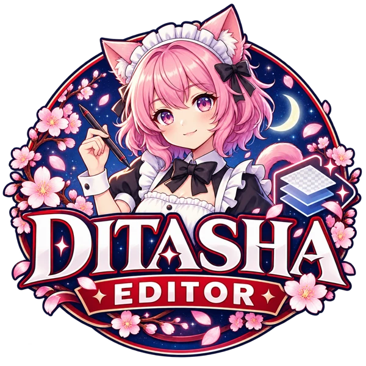

Buka tekstur, susun layer, dan lihat hasilnya di 3D.PNG · JPG · WebP · DDS · YTD
Buka model untuk memutar, memeriksa UV, dan melihat tekstur.
Putar: tarik mouse · Zoom: scrollGeser: klik kanan + tarik
YTD Legacy: DXT1, DXT3, DXT5, BGRA dan RGBA. Ekspor YTD menyimpan tekstur sebagai BGRA tanpa kompresi, satu mipmap.
UV biru adalah panduan dari geometri model dan tidak ikut dalam ekspor tekstur. Pilih layer gambar, lalu geser, tarik salah satu dari 8 titik resize, atau tarik titik di atas gambar untuk memutar. Klik kanan layer untuk crop, pas kanvas, duplikat, urutan, sembunyikan, kunci, atau hapus. Ctrl+D menduplikat; Delete menghapus layer. Tombol + di bar tab membuka workspace baru dengan file dan riwayat terpisah. Sudut tepat bisa diisi di Rot°. Mirror, opacity, dan nama ada di panel Edit layer. Penghapus menghapus bagian layer terpilih; gunakan Crop dan Terapkan crop untuk memotongnya.
YFT / YDD / YDR Legacy: preview geometri statis dan UV, pilihan drawable, wireframe dan foto PNG. GTA V Explorer menyediakan Texture viewer (grid/list, original size, export PNG/DDS) dan Model viewer (LOD, part visibility, grid, points, geometry bounds dan diffuse textures). Preview bersifat statis; animasi, fisika, pengeditan mesh, dan ekspor YFT/YDD/YDR belum tersedia. Material preview diterapkan ke seluruh mesh drawable.
Model Enhanced, file terenkripsi, serta format tekstur lain belum didukung. GLB, DDS (DXT1/3/5, RGBA/BGRA 32-bit) dan PNG/JPG/WebP juga dapat dibuka. Converter mengekspor gambar, YTD baru, DDS dan geometri statis ke GLB. Clothing pack mengekspor replacement atau collection add-on yang sudah memiliki YMT + shop metadata. YMT baru tidak dibuat. File tetap di browser dan tidak diunggah.
Uicons by Flaticon. © 2026 Ditasha-Workshop.
Resolusi hasil ekspor. Posisi dan ukuran semua layer ikut menyesuaikan.
Pilih tekstur yang ingin ditambahkan ke desain aktif.
Siap memeriksa update.
Update sekarang akan mengunduh, memverifikasi, mengganti EXE, lalu membuka aplikasi baru. Ekspor desainmu sebelum melanjutkan.
Kembali ke editor untuk mengekspor PNG, menyimpan YTD, atau membangun clothing pack ZIP.